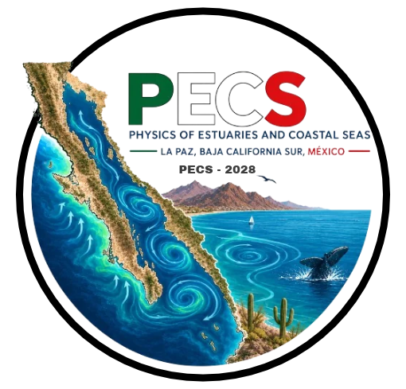

Sesiones científicas
Temas y responsables de las sesiones por confirmar.
LA PAZ, MÉXICO · 2028
PECS — 2028
Un punto de encuentro para la ciencia del océano costero.
Un nuevo horizonte en La Paz, México.
Sitio preliminar · Información por confirmar

PECS · LA PAZ · 202802 / FECHAS
Las fechas propuestas de la conferencia aparecen a continuación. Los plazos se publicarán una vez confirmados.
03 / PROGRAMA
El programa científico, los temas de las sesiones, las personas invitadas y los formatos de presentación se anunciarán tras su confirmación por el equipo organizador.
Temas y responsables de las sesiones por confirmar.
Aquí se anunciarán las personas invitadas.
Aquí estará disponible el horario y el programa.
04 / PARTICIPA
El envío de resúmenes y las inscripciones aún no están abiertos. Las instrucciones, las cuotas y los plazos se publicarán cuando estén disponibles.
Aquí se anunciarán los requisitos y la plataforma para el envío de resúmenes.
Aún no disponibleLos pagos internacionales se realizarán mediante PayPal. Las cuotas, las instrucciones de pago y las condiciones de participación se anunciarán cuando estén disponibles.
Aún no disponibleLa plataforma de la conferencia está en preparación. Los enlaces oficiales aparecerán aquí cuando estén disponibles.
Abrir la plataforma de la conferencia ↗La conferencia se está organizando en La Paz, Baja California Sur. La sede y la información práctica para el viaje están en preparación.
Aquí se publicarán el nombre de la sede, la dirección y la información de accesibilidad.
Se anunciarán las opciones de llegada, alojamiento y posibles tarifas para participantes.
Próximamente: transporte local, información para visitantes y recomendaciones prácticas.
PECS 2028 se está organizando en La Paz, Baja California Sur, México. Este sitio preliminar reunirá la información necesaria para planificar tu participación en la conferencia Physics of Estuaries and Coastal Seas.
La identidad visual conecta la península, los remolinos del golfo de California y las surgencias del lado Pacífico: un contexto oceanográfico para esta edición.
Durante las décadas de 1950 y 1960, los ingenieros costeros y los oceanógrafos costeros se centraban en problemas diferentes relacionados con los estuarios. Los problemas de ingeniería costera estaban vinculados principalmente con la estabilidad de las bocanas de marea, la recuperación de terrenos y el cierre de estuarios y bahías para protegerse de las marejadas ciclónicas. Resolver estos problemas requería conocimientos sobre las mareas y las corrientes de marea. En cambio, los oceanógrafos costeros tendían a concentrarse en las propiedades promediadas sobre el ciclo de marea, como la salinidad, la estratificación y la circulación gravitacional. Mientras que los ingenieros costeros obtenían sus herramientas de la hidráulica, los oceanógrafos costeros se apoyaban en la dinámica de fluidos geofísicos.
En la década de 1970, los ingenieros costeros comenzaron a enfrentarse a distintos tipos de problemas, relacionados principalmente con la calidad del agua. Dado que la calidad del agua está determinada en gran medida por los movimientos promediados sobre el ciclo de marea, los ingenieros costeros empezaron a buscar la ayuda de los oceanógrafos costeros. Como resultado, estos últimos percibieron un interés por su trabajo que había estado ausente en la comunidad de oceanógrafos de mar abierto.
El lugar lógico para que ambas disciplinas se reunieran e intercambiaran ideas parecía ser la International Conference on Coastal Engineering (ICCE), celebrada cada dos años. Lamentablemente, el foro de la ICCE se centró cada vez más en la zona próxima a la costa, relegando los problemas estuarinos a un segundo plano. Fue en la ICCE de 1976 cuando un pequeño grupo de ingenieros costeros y oceanógrafos costeros comprendió que sus intereses estarían mejor atendidos por una conferencia especializada en la física de los estuarios. La idea era celebrar esta conferencia en la misma sede, inmediatamente antes o después de la ICCE. Finalmente, esta propuesta se abandonó porque resultaba difícil encontrar instituciones anfitrionas en algunos de los lugares donde se celebraba la ICCE.
Con la intención de centrarse en los estuarios, la primera conferencia se organizó en septiembre de 1978 en Hamburgo. La segunda no tuvo lugar hasta 1984, en Miami. Desde 1984, las conferencias se han celebrado cada dos años. Con la incorporación de la física de los mares costeros en 1990, la serie de conferencias pasó a conocerse como PECS. A continuación se presenta una lista completa de las conferencias, sus presidentes y las instituciones anfitrionas.
PECS cuenta con un Comité Directivo integrado por quienes han presidido las reuniones anteriores. El Comité garantiza que las futuras conferencias se ajusten a los objetivos mencionados. También selecciona la sede de las próximas conferencias. La organización de cada conferencia y la publicación de sus trabajos son responsabilidad exclusiva del comité organizador local.
Nota editorial: La lista histórica de conferencias mencionada en este texto aún no está incluida en este sitio preliminar.
07 / NOTICIAS
Sigue las noticias del equipo organizador. Los anuncios se publicarán aquí conforme estén disponibles.
Aquí aparecerán las noticias sobre la organización de PECS 2028.
Aquí se compartirán los anuncios de sesiones y ponentes.
Aquí se publicarán las fechas clave y los anuncios de participación.
08 / PATROCINADORES
Aquí reconoceremos a las organizaciones que apoyan PECS 2028 una vez confirmadas.
Los nombres y logotipos se agregarán conforme se confirmen las colaboraciones.
09 / CONTACTO
Los detalles del comité organizador y el correo oficial de contacto se publicarán una vez confirmados.
Escribe al comité organizador ↗